Aioi, Hyogo: things to do, food and stays
Aioi · Hyogo
Aioi
Highlighted on the Hyogo map.
Stay
ＨＯＴＥＬ 万葉岬
HOTEL Manyo Misaki
Inn in Aioi with scenic views.
東横ＩＮＮ相生駅新幹線口

Toyoko INN Aioi Eki Shinkansen Kuchi
Inn in Hongo, Aioi with breakfast available.
相生ステーションホテルアネックス
Aioi Station Hotel Anekkusu
Hotel in Hongo, Aioi with business travelers; 2-minute walk from Jraioi Station.
相生ステーションホテル
Aioi Station Hotel
羅漢の里
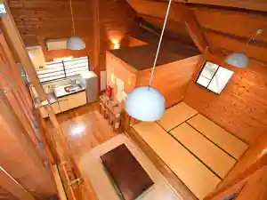
Rakan No Sato
Inn in Yano, Aioi with riverside setting.
Dining
魚稚 相生水産物市場店
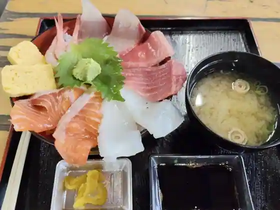
Sakana Chi Aioi Suisanbutsu Shijo
焼がき 大豊
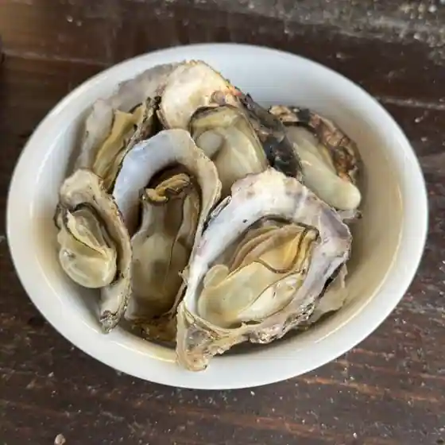
Yaki Gaki Taiho
スピカ
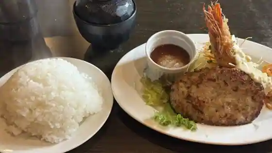
Supika
和ダイニング まねき 白龍城店
Wa Dining Maneki Hakuryu Shiro
夢咲喜食堂
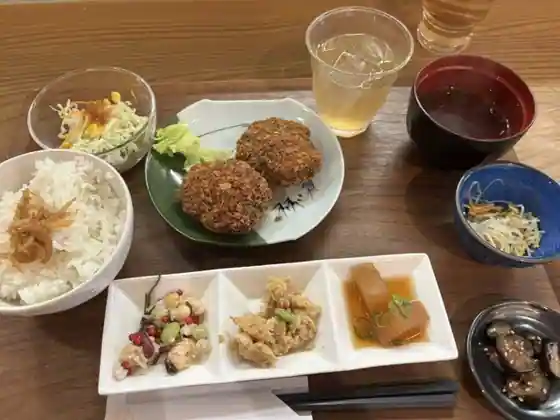
Yumesaki Ki Shokudo
相生飯店
Aioi Meshi
田口食品 相生デザート工場 直売所
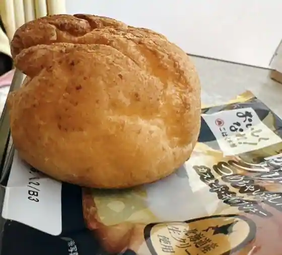
Taguchi Shokuhin Aioi Dezato Kojo Chokubai Tokoro
しちりん焼肉 だい
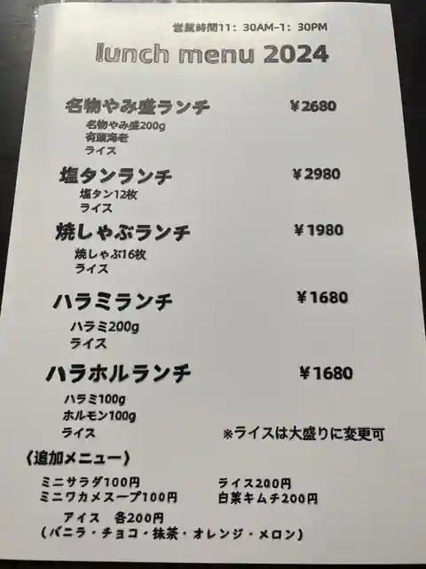
Shichirin Yakiniku Dai
江戸屋
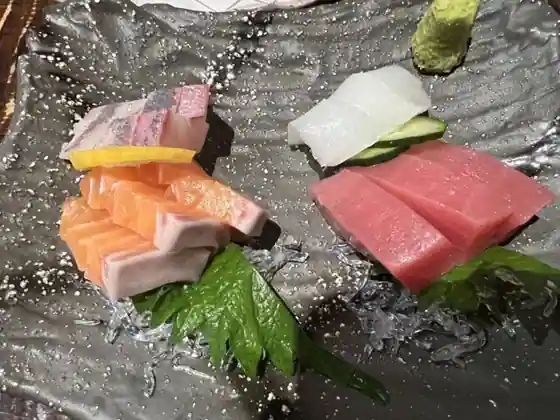
Edoya
油そば いっ菜
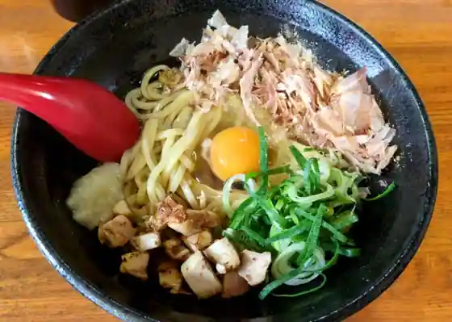
Abura Soba Itsu Na
だるく亭
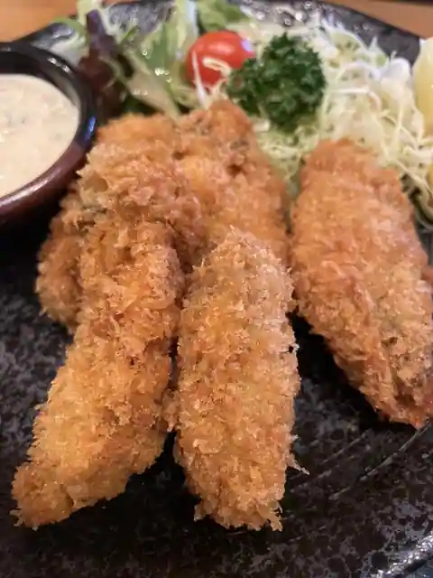
Daruku Tei
道の駅あいおい白龍城
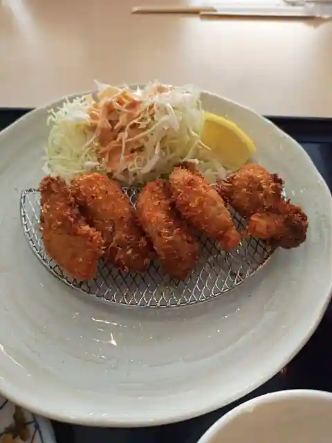
Michi No Eki Aioi Hakuryu Shiro
ホテル 万葉岬
Hotel Manyo Misaki
ドルフィンステーキハウス
Dorufin Steak House
朱
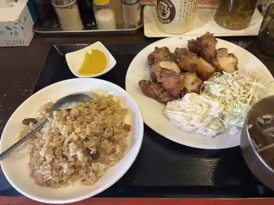
Shu
海鮮料理 みやざき
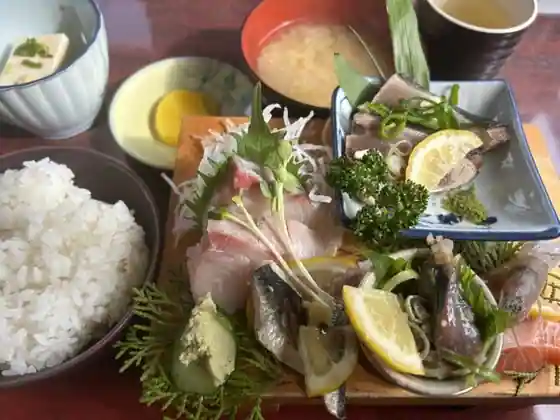
Kaisen Ryori Miyazaki
中華料理 あさひ
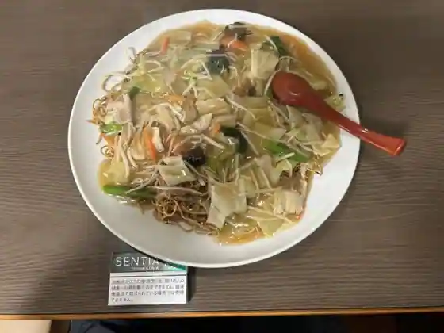
Chukaryori Asahi
縁粋
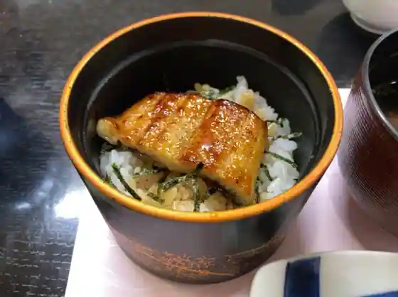
Heri Sui
パン工房マウンテン
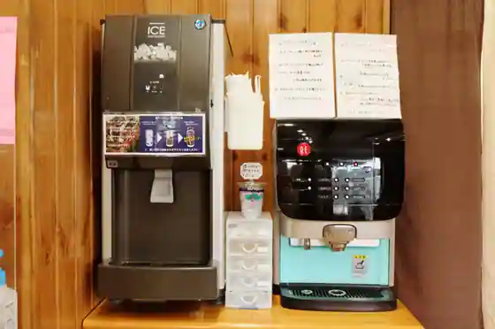
Bakery Kobo Maunten
だるま珈琲
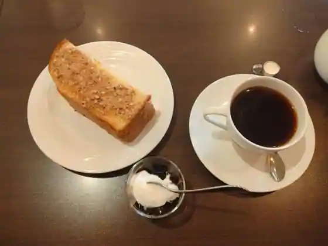
Daruma Coffee
夢玄庵
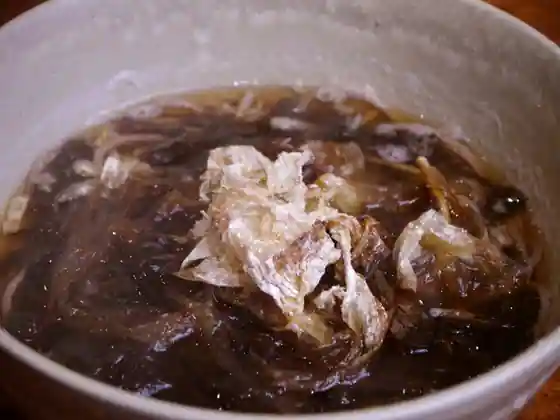
Yume Gen'An
元祖 太平洋
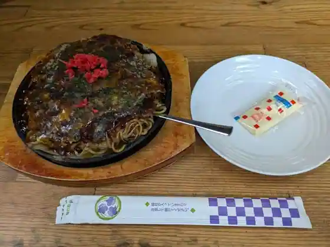
Ganso Taiheiyo
珈琲屋 くりの木
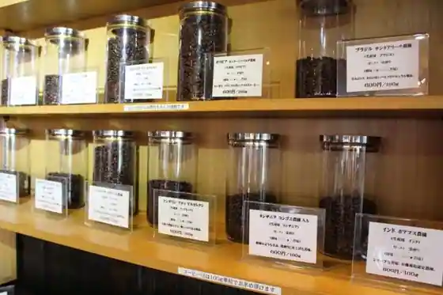
Coffee Ya Kurino Ki
COFFEE 紬
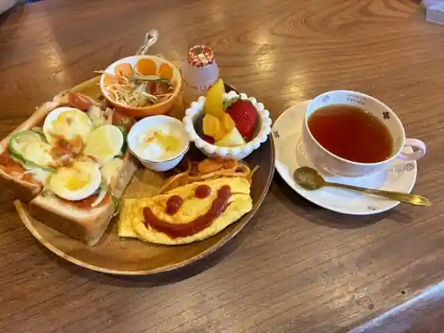
COFFEE Tsumugi